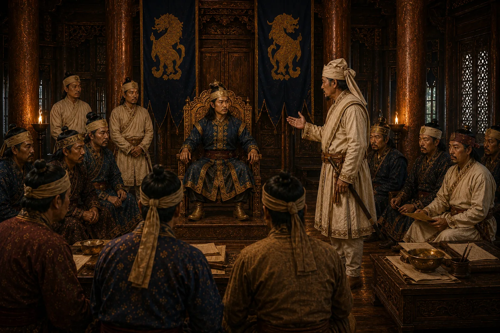

Court Suspicion and Rift Between King and Premier
1676 · Six kings in nine years

Influenced by plotting sons and courtiers, Sujinphaa begins to view the immensely popular Atan Burhagohain with bitter suspicion.
Sources have not yet been catalogued for this record.
People: Atan Burhagohain, Sujinphaa (Arjun Konwar)